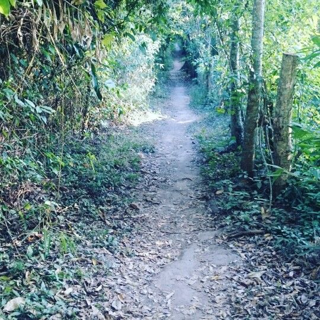

Trilha de Padre Anchieta
Por Jarbas Favoretto

Cubatão Na Trilha Padre Anchieta. - Foto Big Trekking
A Trilha de Padre Anchieta é uma rota histórica que conecta as cidades de São Vicente e Cubatão, na Baixada Santista, Brasil. Esta trilha é famosa por sua importância histórica e cultural, pois foi utilizada pelo missionário jesuíta José de Anchieta durante o período colonial para evangelizar os indígenas da região.
A trilha oferece aos visitantes a oportunidade de explorar a natureza exuberante da Mata Atlântica, com suas paisagens deslumbrantes, cachoeiras e uma rica biodiversidade. Além disso, a trilha é um local de grande valor histórico, permitindo que os visitantes aprendam sobre a história da colonização e a interação entre os colonizadores europeus e os povos indígenas. É um destino popular para caminhadas, turismo ecológico e para aqueles interessados em história e cultura.
Mais um Jardim Botânico